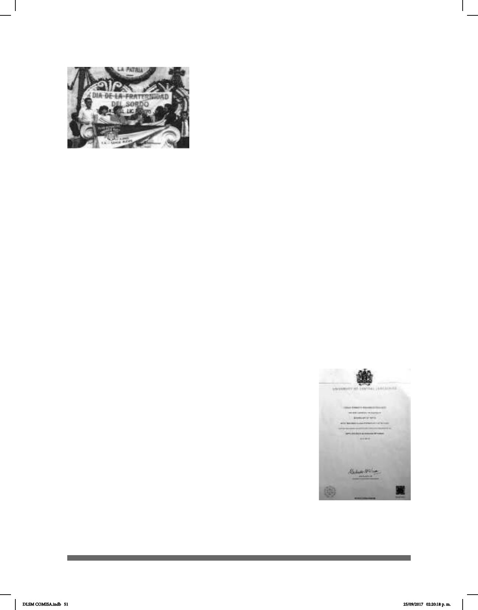

51
En 1999, la asociación de sordos Grupo Señas Libres,
A.C., preocupada principalmente por lograr mejoras
en cuanto a las oportunidades de preparación de las
personas sordas e hipoacúsicas y por concientizar a
los sordos y a la población en general sobre el respeto
y los derechos de la comunidad sorda mexicana,
emprendió acciones tales como la organización y
difusión de distintas actividades entre las que destacan
cursos, diplomados, conferencias, asesorías, etcétera.
Posteriormente esta asociación organizó el primer
Congreso Latinoamericano de Educación Bilingüe.
En 2003 se publicó el documento Historia de la Educación de los Sordos en México y
Lenguaje por Señas Mexicano, de la editorial Fundación de Sordos Hispanos.
En 2004 se elaboró el Diccionario Bilingüe Español – LSM, de Lourdes Acosta y
colaboradores, DIELSEME. Este diccionario fue enviado a cada uno de los centros de
atención múltiple del Distrito Federal y de todo el país.
En 2005, el Diario Ocial de la Federación, mediante la Ley General de las Personas con
Discapacidad en México, reconoce el uso de la Lengua de Señas Mexicana.
En 2009, los autores Luis Armando López García, Rosa Rodríguez, María Zamora y
Susana San Esteban publicaron la primera edición de Mis manos que hablan. Lengua
de señas para sordos, de la editorial Trillas.
Ese mismo año inició el proceso de certicación de los Intérpretes de LSM con el LRI
Francisco Cisneros al frente del Consejo Nacional para el Desarrollo y la Inclusión de
las Personas con Discapacidad (CONADIS). Este gran avance
marcó el principio de la certicación en Lengua de Señas
Mexicana, ya que los procesos de evaluación y certicación
de competencias laborales de intérpretes se aplican en estricto
apego a la Norma de Competencia Laboral para la prestación
de servicios de interpretación de la lengua de señas mexicana
al español y viceversa, clave NUIPD001.01, publicada el 9 de
junio del 2009 en el Diario Ocial de la Federación (DOF).
En 2013, el Lic. César Ernesto Escobedo Delgado se convirtió en
el único sordo a nivel nacional con título en Estudios de Lengua
de Señas Aplicada. Es egresado de la Universidad Central de
Lancashire, Reino Unido, con sede en la Universidad Nacional
Indira Gandhi, Nueva Delhi, India. Ha viajado a más de 30 países
impartiendo conferencias, entre otras actividades. Aprendió
doce lenguas (diez lenguas de señas extrajeras y manejo de
la lecto-escritura en español e inglés) en la Universidad de
Celebración el Día Nacional de
Personas Sordas
Título de licenciatura
del Lic. César Ernesto
Escobedo Delgado
DLSM COMISA.indb 51 25/09/2017 02:20:18 p. m.